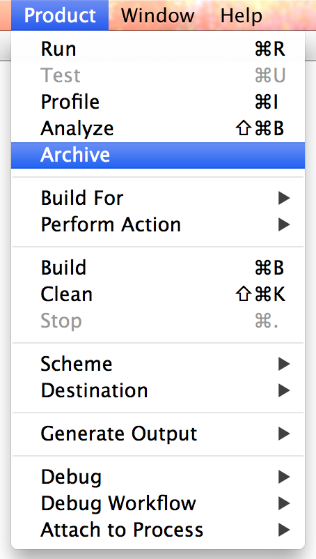
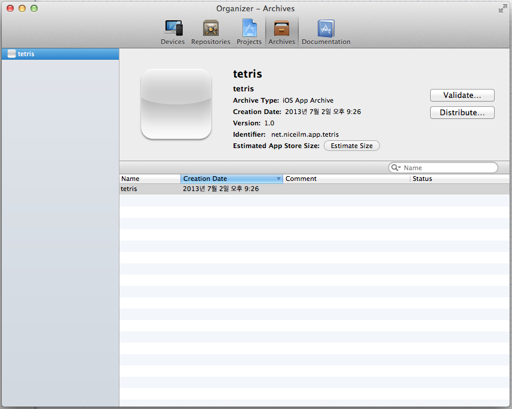
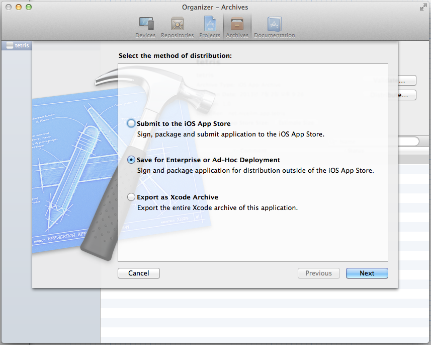
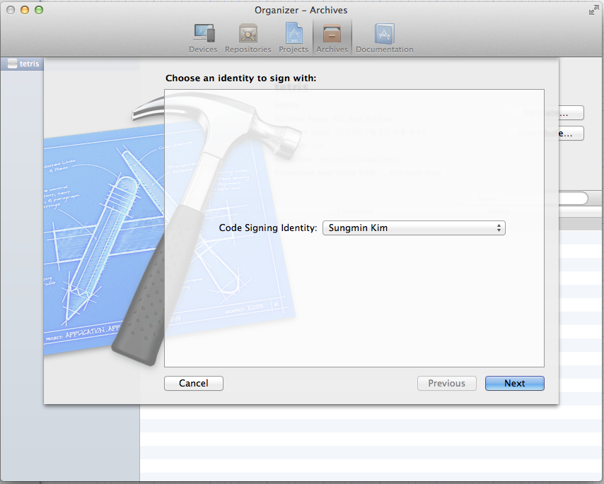
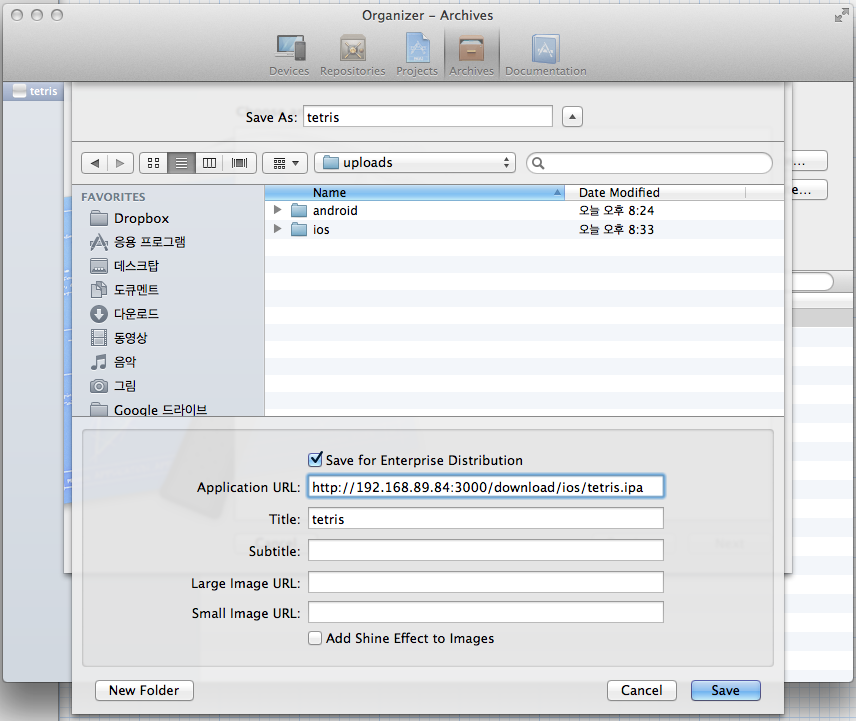

iOS 웹사이트에서 앱 배포하기
힘들었다…
기기 등록 후 앱을 재배포 해야 한다 ㅠㅜ
개발자 등록
개인 개발자 등록은 프로파일을 원격에서 설치 할 수 없음 한번은 XCode Organizer를 이용해서 기기 등록하고 프로파일을 설치 해야 함 기업 개발자로 등록을 하면 프로파일을 원격으로 배포해서 설치 할 수 있음
Archive
archive를 하게되면 앱이름.ipa와 앱이름.plist 두개의 파일을 생성
XCode에서 시뮬레이터를 선택하지 말고 개발 아이폰을 선택한 다음

Product > Archive 를 선택

Distribute… 선택

Save for Enterprise or Ad-Hoc Deployment 체크 후 Next

개발자 등록한 인증서 선택 후 Next

Save for Enterprise Distribution 체크 후
Application URL ipa를 다운 받을 수 있는 경로 정확히 기입
Title명 작성 후 Save
웹사이트에서 앱 배포하기
archive를 통해 생성한 두개의 파일을 원격 서버 업로드 함
iOS앱은 아래와 같이 작성해야 원격에서 배포가 가능
<a href="itms-services://?action=download-manifest&url=https://웹주소/download/앱명.plist">앱이름</a>
iOS7.1로 변경되면서 itms-services 프로토콜 내에서 다운로드 url의 프로토콜을 꼭 https로 해야 한다.